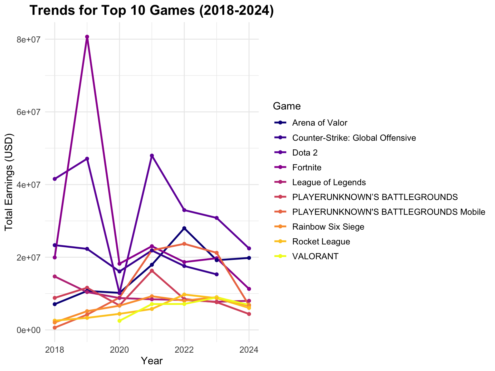

library(rvest)
library(dplyr)
library(tidyverse)
library(httr)
library(ggplot2)
library(tidyr)
library(maps)
library(knitr)
library(viridis)
library(broom)
knitr::opts_chunk$set(
fig.width = 8,
fig.asp = 0.75,
out.width = "80%"
)
theme_set(theme_minimal() + theme(legend.position = "right"))
options(
ggplot2.continuous.colour = "viridis",
ggplot2.continuous.fill = "viridis"
)
scale_colour_discrete = scale_colour_viridis_d
scale_fill_discrete = scale_fill_viridis_d# Data import
rm(list = ls())
country_overall <- read.csv("data/country_overall.csv")
esports_top100 <- read.csv("data/esports_earnings_top100_overall.csv")
top500_365 <- read.csv("data/top500_365.csv")
earnings_country <- read.csv("data/Earnings_country_2018_2024.csv")
earnings_topgame <- read.csv("data/Earnings_topgame_2018_2024.csv")
country_overall$Total_Earnings <- as.numeric(gsub("[\\$,]", "", country_overall$Total_Earnings))
esports_top100$Total_Earnings <- as.numeric(gsub("[\\$,]", "", esports_top100$Total_Earnings))
top500_365$`Total..Last.365.Days.` <- as.numeric(gsub("[\\$,]", "", top500_365$`Total..Last.365.Days.`))
earnings_country$Overall_Earnings <- as.numeric(gsub("[\\$,]", "", earnings_country$Overall_Earnings))
earnings_topgame$Total_Earnings <- as.numeric(gsub("[\\$,]", "", earnings_topgame$Total_Earnings))In this section, we analyze the top 10 countries in esports based on total earnings, with additional focus on the revenue distribution, the dominance of the top game, and the player base. This helps us understand the economic concentration in esports and its relationship with player participation.
Revenue Concentration:
Cross-Country Differences:
# Extract the games with the largest percentage of revenue and their revenue
top_countries <- country_overall %>%
arrange(desc(Total_Earnings)) %>%
head(10) %>%
mutate(
Top_Game_Earnings = as.numeric(gsub("[\\$,]", "", Earnings_From_Top_Game)),
Player_Count = as.numeric(gsub("[^0-9]", "", Number_of_Players)),
Top_Game_Percent = round((Top_Game_Earnings / Total_Earnings) * 100, 2)
)
top_countries_long <- top_countries %>%
select(Country, Total_Earnings, Top_Game_Earnings, Top_Game) %>%
pivot_longer(
cols = c(Total_Earnings, Top_Game_Earnings),
names_to = "Earnings_Type",
values_to = "Earnings"
) %>%
mutate(
Earnings_Type = ifelse(Earnings_Type == "Total_Earnings", "Total Earnings", "Top Game Earnings"),
Game_Label = ifelse(Earnings_Type == "Top Game Earnings", Top_Game, NA) # Only add label for top game earnings
)
head(top_countries_long)## # A tibble: 6 × 5
## Country Top_Game Earnings_Type Earnings Game_Label
## <chr> <chr> <chr> <dbl> <chr>
## 1 China Dota 2 Total Earnings 319027144. <NA>
## 2 China Dota 2 Top Game Earnings 85737773. Dota 2
## 3 United States Fortnite Total Earnings 287370077. <NA>
## 4 United States Fortnite Top Game Earnings 49472180. Fortnite
## 5 Korea League of Legends Total Earnings 151431685. <NA>
## 6 Korea League of Legends Top Game Earnings 38839897. League of LegendsThis bar chart compares the total earnings (yellow) and earnings from the top game (red) for the top 10 countries in e-sports from the top-performing game in each country.
ggplot(top_countries_long, aes(x = reorder(Country, -Earnings), y = Earnings, fill = Earnings_Type)) +
geom_bar(stat = "identity", position = "identity", alpha = 0.9) +
geom_text(
aes(label = Game_Label),
position = position_stack(vjust = 0.5), # Position label in the middle of the "Top Game Earnings" bar
na.rm = TRUE,
size = 3,
color = "black" # Adjust text color if needed
) +
coord_flip() +
scale_fill_manual(values = c("blue", "#ADD8E6")) +
scale_y_continuous(labels = scales::comma) +
labs(
title = "Top 10 Countries: Total vs. Top Game Earnings",
x = "Country", y = "Earnings (USD)", fill = "Earnings Type"
) +
theme_minimal() +
theme(
plot.title = element_text(size = 14, face = "bold"),
legend.position = "top",
axis.text.y = element_text(size = 10)
)From the chart, we can see China leads significantly in both categories, with the United States and Korea following. The dominance of top games in total earnings varies, with some countries like Korea showing a higher reliance on top games, while others like Denmark and Brazil have a more diversified earnings distribution.
The second chart focuses on compare the percentage of revenue generated by the top game for each country. It reveals the dependency of each country’s esports economy on a single title.
ggplot(top_countries, aes(x = reorder(Country, -Top_Game_Percent), y = Top_Game_Percent, fill = Country)) +
geom_bar(stat = "identity") +
coord_flip() +
scale_fill_viridis_d() +
labs(
title = "Percentage of Revenue from Top Game",
x = "Country", y = "Percentage (%)"
) +
theme_minimal() +
theme(
plot.title = element_text(size = 14, face = "bold"),
legend.position = "none",
axis.text.y = element_text(size = 10)
)This visualization provides a bubble chart to analyze the relationship between the number of esports players and their total earnings for each country.
ggplot(top_countries, aes(x = reorder(Country, -Player_Count), y = Player_Count, size = Total_Earnings, color = Player_Count)) +
geom_point(alpha = 0.7) +
coord_flip() +
scale_y_continuous(labels = scales::comma) +
scale_size_continuous(labels = scales::comma) +
scale_color_viridis_c(option = "viridis") +
labs(
title = "Total Players by Country (Bubble Size = Total Earnings)",
x = "Country", y = "Number of Players",
size = "Total Earnings (USD)",
color = "Player Count"
) +
theme_minimal() +
theme(
plot.title = element_text(size = 14, face = "bold"),
axis.text.y = element_text(size = 10),
legend.position = "bottom"
)In this section, we analyze individual player performance based on the top players and top 500 players’ earnings data. This provides insights into individual dominance in esports and the geographic distribution of esports performance.
This provide us a overview of top 10 players and their earnings
# Extract the top 10 players
top_players <- esports_top100 %>%
arrange(desc(Total_Earnings)) %>%
head(10)
# Create a bar chart for the top 10 players by earnings
ggplot(top_players, aes(x = reorder(Player_Name, Total_Earnings), y = Total_Earnings, fill = Highest_Paying_Game)) +
geom_bar(stat = "identity", alpha = 0.8) + # Add alpha for lighter colors
geom_text(
aes(label = paste0("ID: ", Player_ID, "\n$", formatC(Total_Earnings, format = "f", big.mark = ","))),
hjust = 1, size = 3, color = "white" # Set text color to white
) + # Add Player ID and earnings as labels
coord_flip() +
scale_fill_viridis_d(option = "viridis", name = "Top Game", begin = 0.3, end = 0.8) +
labs(
title = "Top 10 Players by Total Earnings",
x = "Player Name",
y = "Total Earnings (USD)",
fill = "Top Game"
) +
theme_minimal() +
theme(
plot.title = element_text(size = 14, face = "bold"),
axis.text.x = element_text(size = 10),
axis.text.y = element_text(size = 10)
)All of the top 10 highest-earning players have earned their fortunes from Dota 2, with Johan Sundstein (N0tail) leading the list at over $7 million, highlighting the game’s massive prize pools and dominance in esports earnings.
Then we expand our focus to top 500 players
# Summary table for top 500
country_summary <- top500_365 %>%
group_by(Country) %>%
summarise(
Player_Count = n(), # Count the number of players
Total_Earnings = sum(`Total..Last.365.Days.`, na.rm = TRUE) # Sum up earnings
) %>%
arrange(desc(Player_Count)) # Sort by the number of players
kable(
country_summary %>%
slice_max(Player_Count, n = 10),
col.names = c("Country", "Player Count", "Total Earnings (USD)"),
caption = "Top 10 Countries: Player Count and Total Earnings"
)| Country | Player Count | Total Earnings (USD) |
|---|---|---|
| China | 136 | 31168889.3 |
| United States | 62 | 10838587.1 |
| Korea, Republic of | 40 | 5003341.9 |
| Brazil | 30 | 4181703.0 |
| Russian Federation | 30 | 6735118.5 |
| Malaysia | 13 | 1897397.8 |
| France | 12 | 2589004.2 |
| Germany | 10 | 1616827.3 |
| Ukraine | 10 | 1984435.7 |
| Denmark | 9 | 2475412.2 |
| Mongolia | 9 | 1551713.2 |
| Thailand | 9 | 725147.5 |
| United Kingdom | 9 | 1268504.9 |
The distribution of top 500 players by country
# Filter small values and group as "Other"
threshold <- 10 # Define a threshold for minimum player count
country_summary1 <- country_summary %>%
mutate(
Country = ifelse(Player_Count <= threshold, "Other", Country) # Group smaller countries as "Other"
) %>%
group_by(Country) %>%
summarise(
Player_Count = sum(Player_Count), # Sum counts for "Other"
.groups = "drop"
)
# Create a pie chart with viridis colors
ggplot(country_summary1, aes(x = "", y = Player_Count, fill = Country)) +
geom_bar(stat = "identity", width = 1) +
coord_polar("y", start = 0) +
scale_fill_viridis_d(option = "plasma", name = "Country") + # Use the "plasma" palette from viridis
labs(
title = "Top 500 Players by Country (Proportion)",
x = NULL,
y = NULL
) +
theme_void() + # Remove grid and axis elements
theme(
plot.title = element_text(size = 16, face = "bold", hjust = 0.5),
legend.title = element_text(size = 12),
legend.text = element_text(size = 10)
)The distribution of top 500 players earnings by country
# Filter small values and group as "Other"
threshold <- 2e6 # Define a threshold for minimum total earnings
country_summary2 <- country_summary %>%
mutate(
Country = ifelse(Total_Earnings <= threshold, "Other", Country) # Group smaller countries as "Other"
) %>%
group_by(Country) %>%
summarise(
Total_Earnings = sum(Total_Earnings), # Sum earnings for "Other"
.groups = "drop"
)
# Create a pie chart with viridis colors
ggplot(country_summary2, aes(x = "", y = Total_Earnings, fill = Country)) +
geom_bar(stat = "identity", width = 1) +
coord_polar("y", start = 0) +
scale_fill_viridis_d(option = "plasma", name = "Country") + # Use the "plasma" palette from viridis
labs(
title = "Total Earnings by Country (Top 500 Players)",
x = NULL,
y = NULL
) +
theme_void() + # Remove grid and axis elements
theme(
plot.title = element_text(size = 16, face = "bold", hjust = 0.5),
legend.title = element_text(size = 12),
legend.text = element_text(size = 10)
)The distribution of top players earning by countries
# Clean and prepare data
top500_365 <- top500_365 %>%
mutate(
Total_Earnings = as.numeric(gsub("[^0-9.]", "", Total..Last.365.Days.)), # Clean earnings column
Country = as.factor(Country) # Ensure Country is a factor for grouping
) %>%
drop_na(Total_Earnings) # Remove rows with missing earnings
# Filter countries with more than 10 players
filtered_countries <- top500_365 %>%
group_by(Country) %>%
filter(n() > 5) # Keep only countries with more than 10 players
# Create the boxplot
ggplot(filtered_countries, aes(x = reorder(Country, -Total_Earnings, median), y = log(Total_Earnings), fill = Country)) +
geom_boxplot(outlier.color = "red", outlier.shape = 16, outlier.size = 1.5, alpha = 0.7) +
labs(
title = "Distribution of Player Earnings by Country (Log Scale)",
x = "Country",
y = "Log Total Earnings (USD)"
) +
theme_minimal() +
theme(
axis.text.x = element_text(angle = 45, hjust = 1),
legend.position = "none",
plot.title = element_text(size = 16, face = "bold")
)After examining horizontal comparisons, we now turn to the longitudinal analysis from a time perspective. This section investigates the trends in total earnings across years, top-performing countries, and the most popular games from 2018 to 2024.
# Summarize yearly earnings
yearly_earnings <- earnings_country %>%
group_by(Year) %>%
summarize(Total_Earnings = sum(Overall_Earnings, na.rm = TRUE))
head(yearly_earnings)## # A tibble: 6 × 2
## Year Total_Earnings
## <int> <dbl>
## 1 2018 170216796.
## 2 2019 231304196.
## 3 2020 144918094.
## 4 2021 255439856.
## 5 2022 239756324.
## 6 2023 229117554.# Plot the trend line
ggplot(yearly_earnings, aes(x = Year, y = Total_Earnings)) +
geom_line(color = "#ADD8E6", size = 1) +
geom_point(color = "blue", size = 2) +
labs(
title = "Total Earnings Trends Over Time (2018-2024)",
x = "Year",
y = "Total Earnings (USD)"
) +
theme_minimal()# Step 1: Summarize yearly earnings by country
yearly_country_earnings <- earnings_country %>%
group_by(Year, Countries) %>%
summarize(Total_Earnings = sum(Overall_Earnings, na.rm = TRUE), .groups = "drop")
head(yearly_country_earnings)## # A tibble: 6 × 3
## Year Countries Total_Earnings
## <int> <chr> <dbl>
## 1 2018 Afghanistan 3000
## 2 2018 Albania 1347.
## 3 2018 Algeria 19249.
## 4 2018 Argentina 427931.
## 5 2018 Armenia 912606.
## 6 2018 Australia 4248987.# Step 2: Identify the top 10 countries by total earnings
top_countries <- yearly_country_earnings %>%
group_by(Countries) %>%
summarize(Total_Earnings = sum(Total_Earnings, na.rm = TRUE), .groups = "drop") %>%
arrange(desc(Total_Earnings)) %>%
slice_head(n = 10) # Select the top 10 countries
# Step 3: Filter the data for only the top 10 countries
top_country_trends <- yearly_country_earnings %>%
filter(Countries %in% top_countries$Countries)
# Step 4: Plot yearly trends for the top 10 countries with a consistent color theme
ggplot(top_country_trends, aes(x = Year, y = Total_Earnings, color = Countries)) +
geom_line(size = 1) +
geom_point(size = 2) +
scale_color_viridis_d(option = "plasma", name = "Country") + # Use the "plasma" palette from viridis
labs(
title = "Yearly Earnings Trends for Top 10 Countries (2018-2024)",
x = "Year",
y = "Total Earnings (USD)",
color = "Country"
) +
theme_minimal() +
theme(
plot.title = element_text(size = 16, face = "bold"),
legend.position = "right",
legend.title = element_text(size = 12),
legend.text = element_text(size = 10),
legend.key.size = unit(0.6, "cm") # Adjust legend key size for better fit
)# top 10 games
top_games <- earnings_topgame %>%
group_by(Game) %>%
summarize(Total_Earnings = sum(Total_Earnings)) %>%
arrange(desc(Total_Earnings)) %>%
head(10) %>%
pull(Game)
top_game_trends <- earnings_topgame %>%
filter(Game %in% top_games)
# plot
ggplot(top_game_trends, aes(x = Year, y = Total_Earnings, color = Game)) +
geom_line(size = 1) +
geom_point(size = 1.5) +
scale_color_viridis_d(option = "plasma", name = "Game") + # Use a high-contrast "plasma" palette
labs(
title = "Trends for Top 10 Games (2018-2024)",
x = "Year",
y = "Total Earnings (USD)"
) +
theme_minimal() +
theme(
plot.title = element_text(size = 16, face = "bold", hjust = 0.5),
legend.position = "right",
legend.title = element_text(size = 12),
legend.text = element_text(size = 10),
axis.title = element_text(size = 12),
axis.text = element_text(size = 10)
)